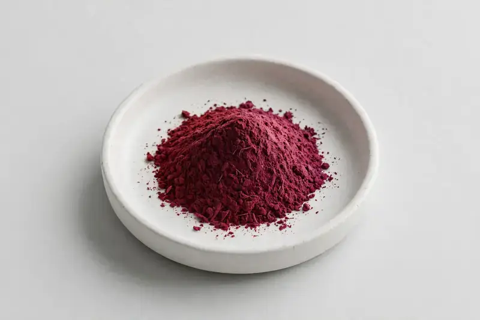

Beta vulgaris — a root extract positioned around nitrates and betaines for sports nutrition formulations.

Overview
Beetroot Extract is derived from the root of Beta vulgaris and is commonly standardized around natural nitrates and betaines, markers at the center of nitric-oxide-oriented sports nutrition lines. Demand is stable across powders, shots and capsules. As a Xi'an-based trading company, HerbChina Extracts sources through vetted partner producers; buyers share their target nitrate spec and we confirm feasibility honestly.
Specifications below reflect commonly requested options in the market — not a stock list. Share your target spec and we'll confirm exactly what we can supply, honestly.
| Specification | Details |
|---|---|
| Botanical identity | Beta vulgaris, root |
| Source material | Root |
| Marker compound | Nitrates / betaines — commonly requested: standardized nitrate content and betaine levels per buyer target |
| Appearance | Deep red to dark magenta fine powder |
| Mesh size | Typically 80–100 mesh (confirm per inquiry) |
| Testing | COA/TDS arranged on request; scope agreed per your spec |
Applications
Documentation
We don't claim in-house labs or certifications we don't hold. COA and TDS documents can be arranged on request, and testing scope is agreed against your specification before supply.
FAQ
Related products
Withania somnifera
Key marker: Withanolides
View specs →Rhodiola rosea
Key marker: Rosavins & Salidroside
View specs →Silybum marianum
Key marker: Silymarin
View specs →Prunus cerasus
Key marker: Anthocyanins
View specs →Camellia sinensis
Key marker: EGCG / Polyphenols
View specs →Buyer guides
Buyer’s guide
Identity, actives, heavy metals, micro — what each section of a Certificate of Analysis means, and the red flags that tell you to walk away.
Read the guide →Buyer’s guide
Section-by-section COA walkthrough — marker assays, heavy metals, micro panels, red flags, and a buyer checklist.
Read the guide →Send your target spec and volumes — we'll respond with a tailored quotation.
Request a Quote